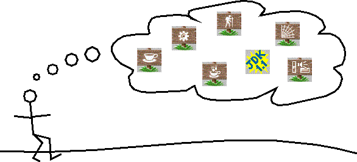

Feedback Form
|
|
Start of Tutorial |
Search
Feedback Form |
You've learned it all:
Your feedback is important to us! Please send your comments and suggestions to us using the feedback page.
 Now, it's time to put all that knowledge and programming skill to use. You can choose your own project, or you can follow the description and analysis of some of the projects that we did.
BINGO! A client/server application that implements the game of BINGO. This example broadcasts information via a multicast socket, builds its GUI with Swing components, uses multiple synchronous threads, and communicates with RMI.
Note: This trail assumes that you are completely comfortable with writing and running Java applications. If you aren't, please go to the lesson The "Hello World" Application, and then visit any other lessons and trails that interest you. In particular, you might want to visit Learning the Java Language
|
|
Start of Tutorial |
Search
Feedback Form |